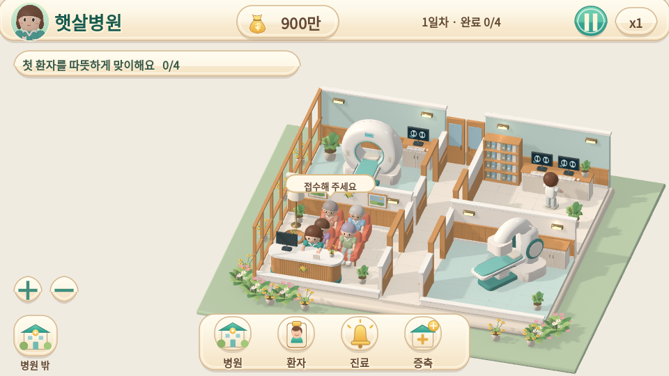
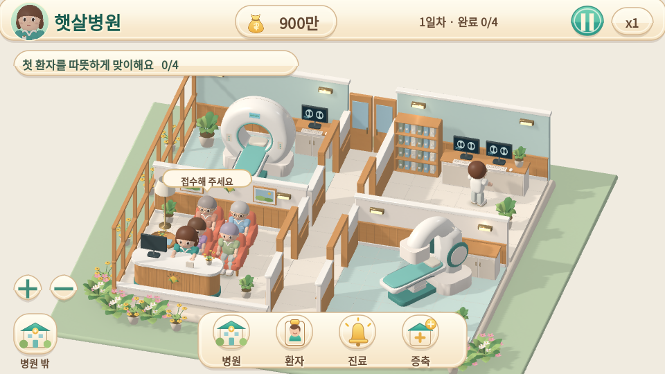
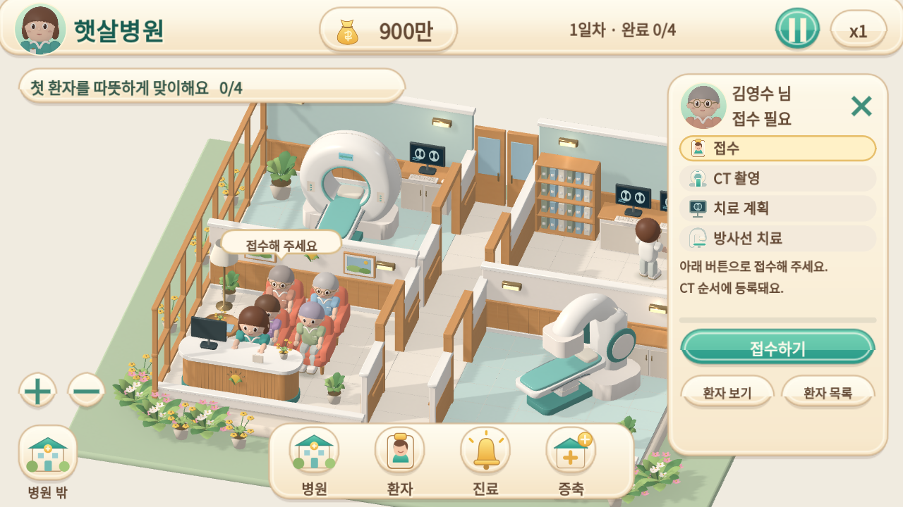
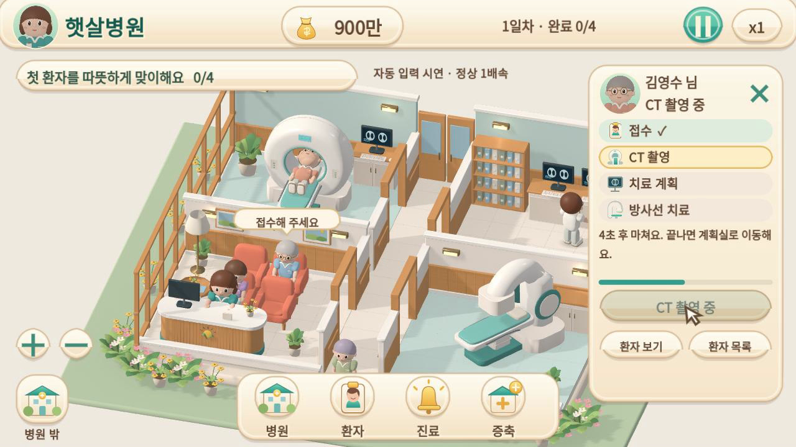
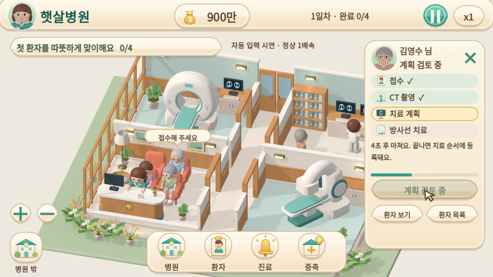
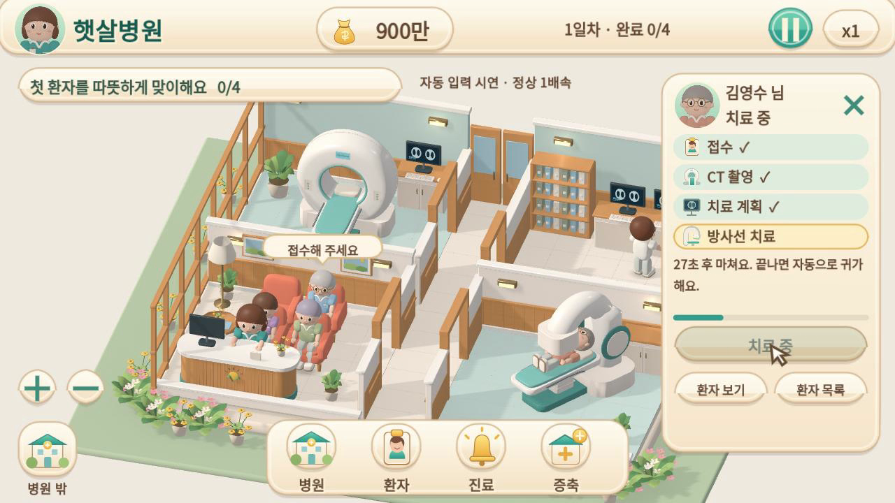
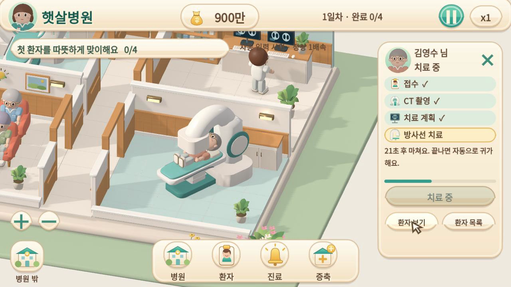
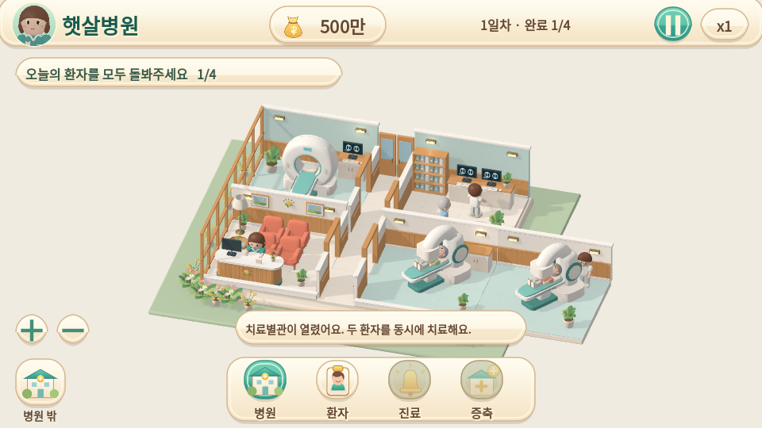
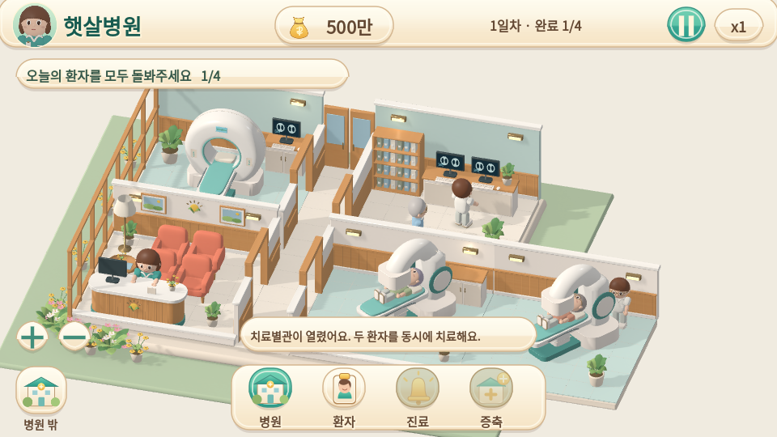
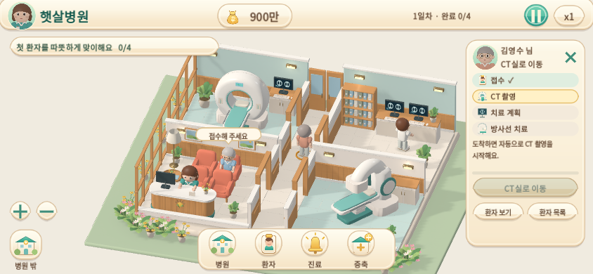

병원은 더 크게, 운영 시점은 안정적으로
상태 안내·환자 카드·치료 자세를 유지하면서, 진료 단계마다 방으로 확대하던 카메라를 바꿨습니다. 모든 화면과 영상은 실제 Godot 실행 결과입니다.
54초 · 정상 1배속 플레이
자동 입력 시연입니다. 한 환자를 선택한 채 접수 → CT → 계획 → 치료를 진행합니다. 44초 전까지 기본 시점을 유지하고, 44초에는 ‘환자 보기’, 49초에는 ‘병원’ 버튼을 눌러 상세 확대와 복귀를 확인합니다.
기본 화면

이전 · 5e60676
현재 · 같은 모델이 화면상 약 23% 크게 보이는 기본 시점환자 카드가 열려도 확대율 유지
 이전
이전
현재 · 화면 안 환자는 시점 유지, 상세 확대는 별도 버튼같은 환자 · 같은 시점

CT
계획 검토
치료단계별 카메라 위치·확대율은 실제 녹화 실행의 결과 JSON에 기록합니다. 상태 변화는 선택 표시와 카드로 전달합니다.
상세 확대는 요청할 때

‘환자 보기’ 버튼으로 확대하고, 하단 ‘병원’ 버튼으로 기본 시점에 돌아옵니다. 자동 전환 도중에도 드래그·줌으로 즉시 직접 조작할 수 있습니다.
증축 후에도 두 치료실과 동선을 함께 확인

이전
현재 · 증축 직후 안내 포함가로 터치 화면

브라우저의 실제 접수 탭과 저장을 확인합니다. 실제 iPhone/Safari의 가독성·성능 검증과는 구분합니다.
카메라 동작과 한계 · 실행 결과 · 회귀 검증 · 이전 상태 안내·치료 자세 개선